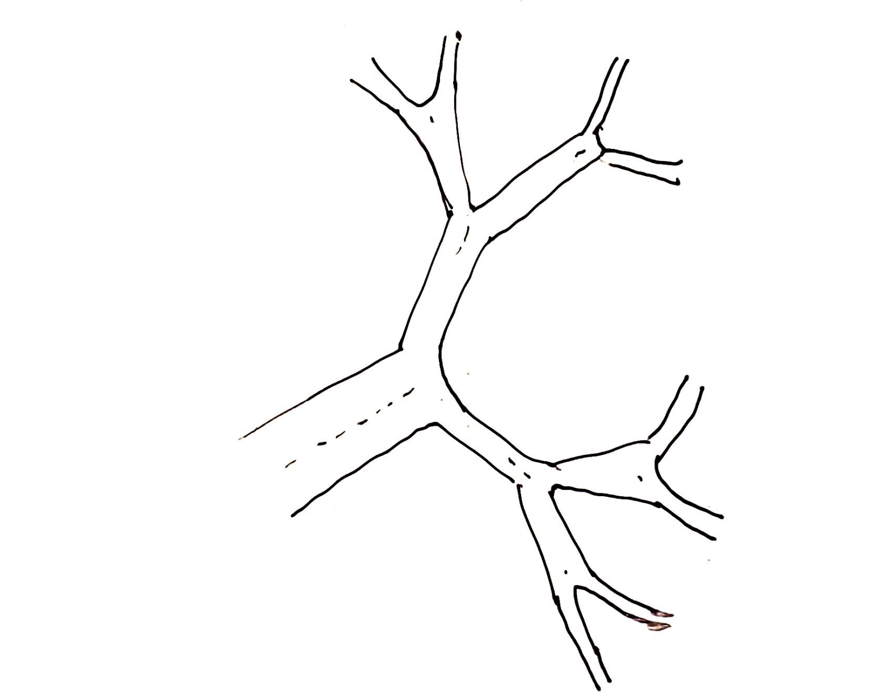

4
Fibonacci
We have used recursion for sum. Though trivial, this problem reveals some interesting thinking pattern. Instead of summing from 0, we start from the other end. The recursion asks us to look around and find anything that can help us reach the goal. We call this the natural thinking.
In this chapter we will continue our journey, and this time to come up the fibonacci sequence.
Fibonacci
Write an algorithm to output the nth fibonacci sequence, 1 1 2 3 5 8 13 …. To come up a new number we need to add the previous two numbers.
If we have been following the previous chapter, we should be able to come up the following recursion plan quickly.
fib(0) -> 0
fib(1) -> 1
fib(n) -> fib(n-1) + fib(n-2)
The code can be as short as the plan.
function fib(n) {
if (n == 0) return 0
if (n == 1) return 1
return fib(n-1) + fib(n - 2)
}
I'm proud of you!
The implementation is super clean, however we need to recognize that this problem is a bit more complex. Why? Because inside each function instance, it calls another function instance twice!
What's the matter? Two vs one vs a dozen? What can be the difference.
Running time for multiple terms

I could show you the full picture of the recursion pathway, and give you an idea of how complicated it can gets. But becuase we are using a new way looking at the recursion, I'll try to avoid it.
Let's visualize what happens inside that function little by little with a bit more patience.
fib(n)
- calls fib(n-1) and stores in a
- calls fib(n-2) and stores in b
- adds a and b together and return it
Say the total time spent on fib(n) is t|n.
t|n = t|n-1 + t|n-2 + 1
Keep in mind, recursion runs in serial. It calls fib(n-2) after fib(n-1), don't think of them as parallel. You can take each + operator as a next indicator. The last 1 is the unit time spent on the addition operation.
I don't want to bore you with the math involved to calculate t|n, so I'll just show you the result.
t|n = 2 * (2^n) - 1 = O(2^n)
It's n to the power of 2. Actually we also have less math intensive way to figure this out. Each time we land on the function fib(n), we are asked to do two tasks; and for each task, we need to do two more sub-tasks; this continues for n times, multiplying two to two each time. Imagining you are on a crossroad leading to two roads, and when you reach the next crossroad, it leads to two more.
I don't know how much experience you have with the result by keeping multiplying something by two. When the number of times is a few, the result can be ok. But when the number of times reaches above 10, the result can go quite large. Essentially as the number of times increases, the result tends to go very large very quickly. This is essentially why in the previous chapter we said that O(2^n) is expensive algorithm in general.
The bad news about expensive algorithm is that they normally only work on paper. Pratically when you are using it to solve a problem, it can choke even with a medium size number. Before we go to seek whehter there's a better way for the running time of fibonacci sequence, I'd like to compare our current algoirthm with sum.
For sum algorithm, we have one term sum(n-1)+n with O(n) running time; for fib algorithm, we have two terms fib(n-1)+fib(n-2) with O(2^n) running time; so does that mean when we have three terms abc(n-1)+abc(n-2)+abc(n-3), we could end up with O(3^n) running time. You can think O(n) is written as O(1^n).
t|n = O(3^n)
The answer is yes, your observation pays off. Back to the same analagy using crossroads, when we have a three-terms algorithm, each time you need to face three choices, and if you choose to go through all choices, you need to multiply it with three each time. Thus the running time is O(3^n). I'm sure you know O(3^n) is worse than O(2^n), because it goes up even faster.
For multiple terms, we can generalize that the running time is O(k^n), where k is the number of terms appeared in the expression inside recursion.
Remember the visited instance
The optimization of our algorithm, making it run faster, is based on one observation.
fib(n) --> fib(n-1) + fib(n - 2)
To find the answer of n, we need answer for n-1 and n-2. Both n-1 and n-2 are going to the same direction towards 0. Guess who's going to reach there earlier?
It's n-1. Hah, you might not guess it right. It's not who is closer to 0, it's who's in the first term. Remember, both terms don't run in parallel. Unless the first term returns, the second term can be called.
Here comes to the tricky part. When we the first term n-1 returns, what have we gone through? We get the answer for fib(n-1) for sure, at the same time, we should get the answer for all the fib(k) where k < n-1, why?
This is recursion. The assumption of the recursion is that only when the fib(n-1) and fib(n-2) are available, then we can calculate fib(n). So if we have already gotten fib(n-1), that means fib(n-2) and fib(n-3) have to be available. Making sense?
If you think there's any wodu magic there, think about it again. When we goes into fib(n-1), we already finish all the work. This is exactly the same case for sum, when we get sum(n), we should already get all including sum(n-1), sum(n-2) and etc.
Alright, now we go through the first term fib(n-1), let's move on to the second term fib(n-2). But now things is a bit different. How so? Because we have already stated fib(n-2) is known!
Use crossroad as our analagy again, at the crossroad, you choose one road, once you go through everything from that branch, you come back to the same crossroad, you find out there's no second option any more, because it has been visited in the past?
x = fib(n-2)
fib(n) --> fib(n-1) + x
We replace fib(n-2) with a constant x where it has been determined earlier. In that case, does this remind you anything?
sum(n) --> sum(n-1) + n
Exactly, this is essentially same as sum in terms of the running time now! Which means if we can manage to save the called fib result, we can get the running time in O(n) instead of O(2^n). That'll be quite an improvement.
Let's make our algorithm remember the visited call.
let m = { 0: 0, 1: 1 }
function fib(n) {
if (n in m) return m[n]
m[n] = fib(n-1) + fib(n - 2)
return m[n]
}
In order to do that, we used a data structure called dictionary where we can have one to one mapping between a key and a value. In our case, the key is the instance that we have visited, and value is its result returned from the call. Kool! Since at the beginning we have already known two results for 0 and 1, we can even put these two in the dicitonary.
During each call to fib, the first thing we do is to check whether the key is in the dictionary, if it's there, we return the value right away without doing any calculation. If it's not there, we go to the regular expression to calculate the result. Before we return the result, we store it in the dictionary so next time when we need, we can reuse it. That's it.
This technique is called memorization, and people often call it caching as well. When used in recursion, in this case, it reduces the running time from O(2^n) to O(n), thus making larger number possible. Let's try it.
> fib(100)
354224848179262000000
Without memorization, it'll take 1030 calculation, always impossible using our personal computer. Afer the memorizaiton is applied, it reduces to 100, what a saving! Memorization is quite powerful, in a way, it dynamically defines the new boundaries where the branches can go, initially the boundary is at 0 and 1, because we know fib(0) and fib(1); as the calculation starts, new boundary gradually adds to the list, such as fib(2), and then fib(3) and etc.
In a way, memorization acts as a choice eliminator. If you have a good memory, you probably would try less, just because you remember you have done it before.
Haskell version
Before we end this chapter, we'd like to present the haskell version.
fib 0 = 0
fib 1 = 1
fib n = fib (n-1) + fib (n-2)
The above code doesn't work for large n any more because of the same issue we mentioned earlier, so we need to add memorization to it.
fib :: Int -> Integer
fib = (map fib' [0 ..] !!)
where fib' 0 = 0
fib' 1 = 1
fib' n = fib (n-2) + fib (n-1)
The above code becomes a bit hard to understand. But at least we can still see the main body fib' that is implemented using the recursion. The part map fib [0 ..] !! is some magic that memorize all results with an array.
Let’s run it.
fib 2
> 2
fib 10
> 89
fib 100
> 573147844013817084101
fib 1000
> 70330367711422815821835254877183549
7701812698363587327426049050871545371
1819693357974224949456261173348775044
9241765991088186363265450223647106012
0533741212738673391111981393731255987
67690091902245245323403501
fib 10000
> 54438373113565281338734260993750380
1353891845546959670262477158412085828
6562234901708305154793896054117382267
5978026317384359584751116241439174702
6429591699255863341179060630480897935
31476108466259072759367899150...total 209 digits
Yah, the 10000th fibonacci number has 209 digits, who knows.
There's one thing that we notice Javascript version and Haskell version for n=100 do not produce identical result though they are close.
354224848179262000000 Javascript
354224848179261915075 Haskell
We have a guts feeling that Haskell is right, but what makes Javascript produce wrong result?
Yes, because the number is too large, larger than the regular integer size. In that case to keep the effective digits, we need to switch to use big number.
let m = { 0: 0n, 1: 1n }
function fib(n) {
if (n in m) return BigInt(m[n])
m[n] = fib(n-1) + fib(n - 2)
return BigInt(m[n])
}
fib(100)
> 354224848179261915075n